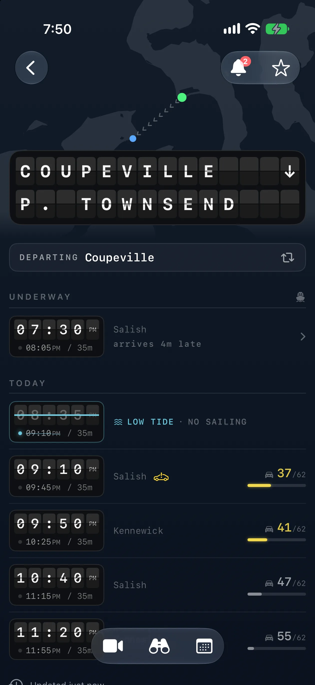

Aweigh
iPhone & Apple Watch · Awaiting App ReviewKnow which ferry to catch. Live schedules, vessel positions, and capacity, organized around the trip you’re making.
Explore AweighInterfaces for small screens.
Ideas that reach beyond them.
I build native apps, tools for making things, and improvements to the engines other people build on.

Know which ferry to catch. Live schedules, vessel positions, and capacity, organized around the trip you’re making.
Explore AweighA different way to see a familiar place. A live camera inspired by the Game Boy Camera.

A picture becomes a plan, then a drawing. A desktop converter and a Pico acting as a USB controller.
My contributions to Godot include native ProMotion support, mobile lifecycle fixes, and more accurate frame pacing in Low Power Mode.
Explore the engine work